What is reproduction?
Every living thing is born, grows, matures, reproduces and finally dies. A mango tree grows old and dies, but its seeds become new mango trees. Cows give birth to calves, dogs to puppies, humans to children. This is how life on Earth goes on.
Two ways to reproduce
Asexual
Sexual
Why do small differences matter?
In sexual reproduction, children get a mix of their parents' characters, so they differ a little from their parents. Over many generations, such differences help living beings adapt to changing environments, and sometimes even give rise to new kinds of species.
Think It Over
Try to answer first, then tap to check.
When does a farmer prefer asexual or sexual methods of reproduction for crop production?
Sexual methods (seeds) when the farmer wants new, improved varieties (high yield, disease resistance) through hybridisation, or for crops that are naturally grown from seed such as wheat, rice, maize and pulses.
Why do most complex animals and flowering plants use sexual reproduction, while simple organisms like yeast and hydra mainly reproduce asexually?
Asexual reproduction
Asexual reproduction is seen in many unicellular organisms (bacteria, amoeba, yeast), in simple multicellular animals (hydra, sponge) and in many plants.
Vegetative propagation
Many plants grow new shoots and roots from their existing parts, without seeds:
- Potato, ginger: fleshy underground stems sprout new plants.
- Money plant, sugarcane: stem cuttings grow into new plants.
- Bryophyllum: tiny plantlets sprout along the edge (notches) of the leaf and grow into new plants (Fig. 11.1).
New plants arising from the vegetative parts (root, stem, leaf: the growing parts, not flowers or seeds) is called vegetative propagation.
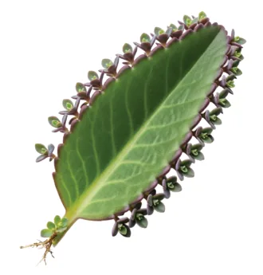
Key point
Vegetative propagation involves only one parent, so it produces genetically identical individuals.
How is vegetative propagation helpful in agriculture?
Because the new plants are exact copies of the parent, scientists and gardeners (horticulturists) use cutting, grafting, layering and tissue culture to grow large numbers of plants with the same desirable qualities (sweet fruit, big flowers, high yield). Activity 11.1 asks you to watch gardeners or farmers doing these.
1. Cutting
- Cut the overgrown branches at the end of the growing season and prepare cuttings; note their length and count the nodes and internodes.
- Collect the shoot cuttings in the morning.
- Remove the leaves from the lower half of each cutting.
- Push each cutting about half its length into soil mixed with compost, at an angle of about 45–60°.
- Water regularly. Roots grow from the buried nodes and a new plant forms.
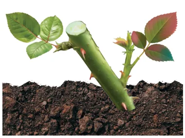
Used for: rose, sugarcane, money plant, hibiscus, grapes, bougainvillea.
2. Grafting
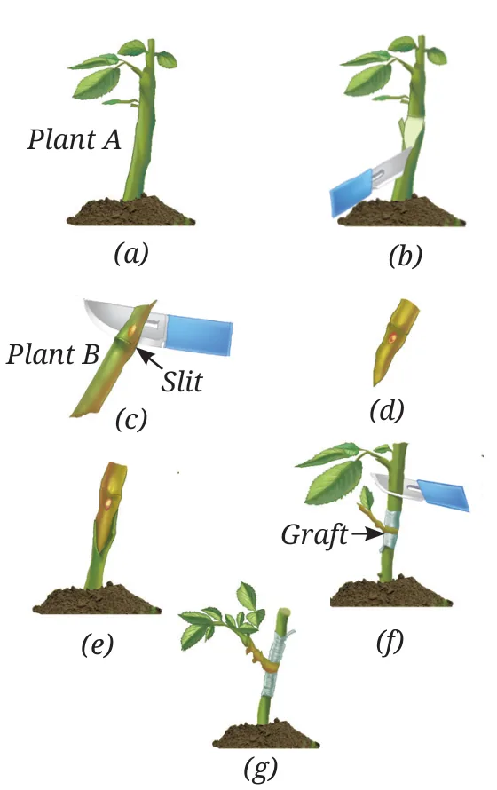
- Take a healthy rooted plant, Plant A (e.g. wild rose). This part with roots is called the stock.
- Take a healthy stem piece of another variety, Plant B (e.g. yellow or pink rose). This is the scion.
- Make a slit (wound) on a twig of Plant A.
- Insert and fit the stem of Plant B into the slit.
- Wrap the joint with cotton cloth or film so pests cannot enter until it heals. Cut the other branches of Plant A.
- Water regularly. Plant B grows using the roots of Plant A.
Remember: stock and scion
Stock = Soil side (has the roots). Scion = the Scene on top (gives the flowers or fruit we want). The new plant gives the fruit or flowers of the scion with the strong roots of the stock. Mango, guava, apple and rose are often grafted.
3. Layering
- Bend a flexible, thin twig (e.g. lemon) and bury its middle part under the soil, still attached to the parent.
- Water regularly.
- In 10–15 days, roots develop from the buried part.
- Now cut the twig from the parent plant. It grows as a new plant.
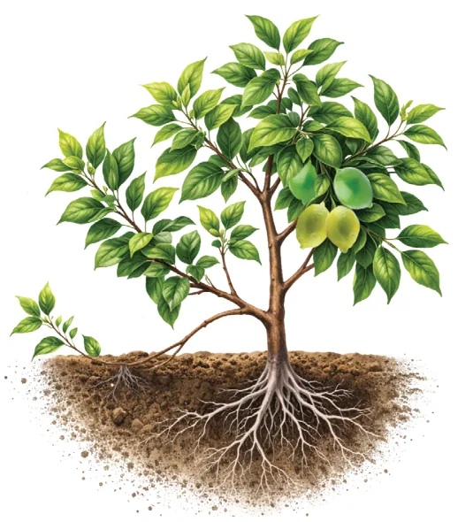
Used for: lemon, jasmine, grapes, strawberry.
4. Tissue culture
A few cells from the shoot tip (apical meristem) are grown on a nutrient medium in a sterile glass jar. They form a mass that grows into thousands of tiny plantlets, which are then planted in fields.
It has revolutionised banana farming: farmers get mass-produced, virus-free, healthy plantlets that give high yields. This is also asexual reproduction.
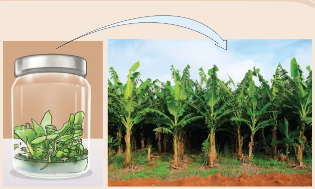
Compare the four methods
| Method | What is done | Example | Main benefit |
|---|---|---|---|
| Cutting | Stem piece planted in soil | Rose, sugarcane | Simple, cheap |
| Grafting | Stem of one plant joined onto a rooted plant | Mango, rose | Combine good fruit with strong roots |
| Layering | Twig buried while still attached to parent | Lemon, jasmine | Parent feeds the twig until it roots |
| Tissue culture | Cells grown in a lab on nutrient medium | Banana, orchids | Thousands of disease-free plants fast |
Bridging Science and Society: KVKs
Krishi Vigyan Kendras (KVKs) of the Indian Council of Agricultural Research (ICAR) train farmers in modern grafting so they can grow high-yield fruits, and teach them marketing and government schemes to boost their income.
Budding and spore formation
Budding in yeast (Activity 11.2)
- Take 20 mL sugar solution (1 g in 10 mL) in a test tube, add a pinch of yeast and plug with cotton.
- Keep it in a warm place for 1–2 hours.
- Put a drop on a slide, cover with a coverslip and see under a microscope.
You see small round outgrowths (buds) on the parent yeast cells. Yes, the yeast is duplicating: each bud becomes a new yeast cell. Often buds stay attached and form a short chain.
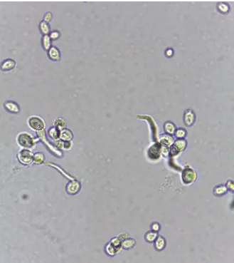
Budding in hydra
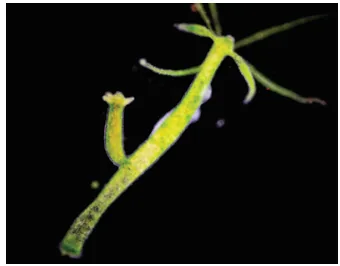
- Repeated cell division at one spot on the parent
- A small outgrowth: the bud
- Bud grows tentacles and a mouth
- Bud separates and lives on its own
This is called budding. A hydra can carry several buds at the same time.
Where do microbes come from? Louis Pasteur
People once thought living things arose spontaneously from non-living matter (like mould "appearing" on food). Louis Pasteur's experiments proved that new life always comes from pre-existing life. His work gave the germ theory of disease, strengthened the cell theory (all cells come from pre-existing cells) and led to sterilisation of food and instruments.
Spore formation in bread mould (Activity 11.3)
- Moisten a slice of bread or roti and place it on wet cotton covered with tissue paper in a closed box (a moist chamber).
- Keep it in a warm, dark place (25–35 °C). Keep it moist and observe daily without touching.
- After about 3 days, fuzzy mould grows. Stain a little with cotton blue and see it under a microscope.
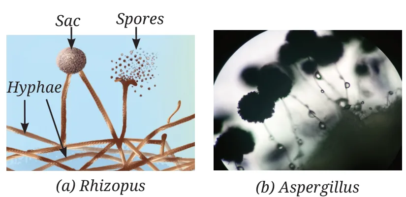
Hyphae
Thin, thread-like structures that spread over the bread and absorb food.
Sporangium (sac)
Round sac at the tip of an upright hypha. Spores form inside it (Rhizopus).
Spores
Tiny, light, usually single-celled. Millions from one colony; float in air.
The mould was not on the fresh bread. It grew from spores already in the air that settled on the moist bread. Spores wait for moisture, warmth and nutrients, then germinate quickly into a new mould.
Why we refrigerate food
Spores need warmth and moisture. Low temperature slows or stops their growth. Before refrigerators became common (about 100 years ago), fresh food lasted only 1–2 days. Refrigeration and deep freezing made fruits, vegetables and dairy available all year and prevented spoilage by moulds and bacteria.
Fungi are useful too
Fungi break down organic waste and pollutants, help remove heavy metals from industrial waste, and give us antibiotics such as penicillin (and the related amoxicillin), which have saved countless lives. Some fungi (for example Aspergillus and Pestalotiopsis species) have been found to slowly break down certain plastics.
The common thread: mitosis
Asexual methods at a glance
| Method | How | Examples |
|---|---|---|
| Budding | Outgrowth on the parent grows and separates | Yeast, hydra |
| Spore formation | Many light spores formed in a sac, spread by air | Bread mould (Rhizopus), Aspergillus |
| Vegetative propagation | New plant from root, stem or leaf | Potato, ginger, Bryophyllum, sugarcane |
| Artificial methods | Cutting, grafting, layering, tissue culture | Rose, mango, lemon, banana |
Sexual reproduction and meiosis
Sexual reproduction involves two parents, and both give genetic material to the child. But here is a problem: if each parent passed on its full set of chromosomes, the number would double every generation (46 → 92 → 184…). Nature solves this with a special cell division: meiosis.
11.2.1 How does meiosis create variation?
- Chromosomes are thread-like structures in the nucleus that carry genetic information. Each species has a fixed number.
- Humans have 23 pairs = 46 chromosomes. In each pair, one came from the mother and one from the father.
- Meiosis halves the number: a diploid parent cell (2 sets, 46) makes haploid daughter cells (1 set, 23). These are the gametes.
- Animal gametes: sperm (male) and egg (female). In plants, the pollen grain carries male gametes to the ovule, which holds the egg.
- In meiosis, the two chromosomes of each pair separate, so every gamete gets one chromosome from each pair. Which one goes into a gamete is random.
Activity 11.4: the bead model
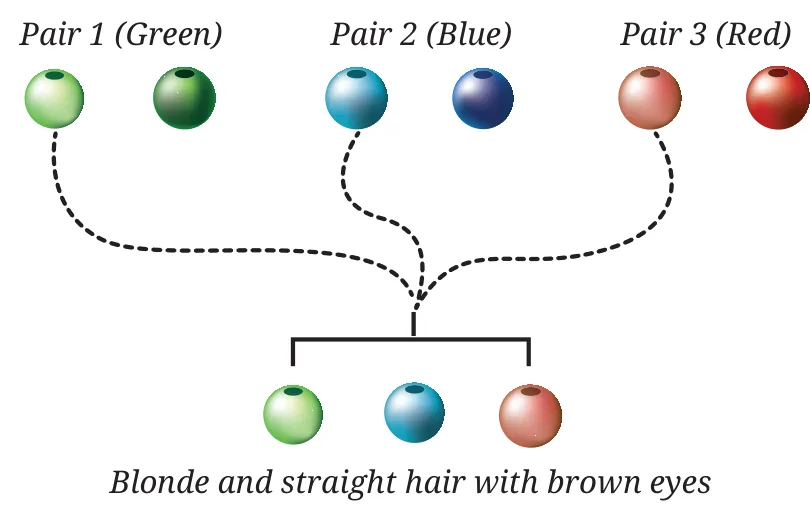
Each pair of beads stands for a pair of chromosomes with two forms of a character:
- Pair 1 (green): light = blonde hair, dark = black hair
- Pair 2 (blue): light = straight hair, dark = curly hair
- Pair 3 (red): light = brown eyes, dark = black eyes
Pick one bead from each pair at random. With 3 pairs, there are 2 × 2 × 2 = 8 combinations.
🎲 Try it: make a gamete
Press the button to pick one bead from each pair at random, like meiosis does. Try to find all 8 different gametes.
So why are we all different?
This random mixing gives a huge number of combinations, so children are genetically different from their parents and from their brothers and sisters. This variation helps some individuals survive in changing environments, and over time it contributes to evolution. Examples: some people can tolerate low oxygen at high altitudes; some can digest milk as adults.
Sexual reproduction in flowering plants
Flowering plants are called angiosperms. They are the most diverse group of plants on Earth, and the flower is their reproductive organ. (Non-flowering plants like pines also reproduce sexually; you study them in the next chapter.) Bright colours and fragrance are not just for beauty: they attract pollinators.
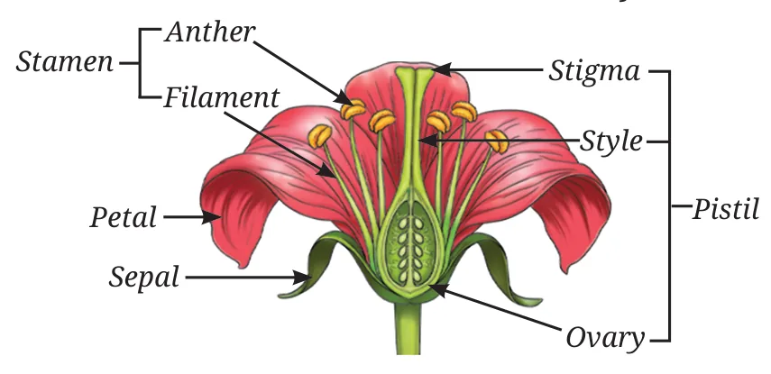
- 1Sepals: green, outermost whorl. Protect the flower in the bud stage.
- 2Petals: coloured, often scented. Attract insects and birds.
- 3Stamen (male): filament (stalk) + anther, which makes pollen grains containing male gametes.
- 4Pistil (female): stigma + style + ovary.
A complete flower has all four parts. In some flowers, sepals and petals are fused together.
🌺 Tap a part of the flower
Tap each name to see where it is and what it does. Work from the outside in, like Activity 11.5.
The pistil up close
- Stigma: at the tip; flat and/or sticky to catch pollen.
- Style: a thin, long tube joining the stigma to the ovary.
- Ovary: the swollen base. It contains ovules; each ovule has an egg cell (female gamete).
Activity 11.5: cut the ovary transversely (T.S.) and longitudinally (L.S.) and look under a dissecting microscope: you see the small round ovules attached inside.
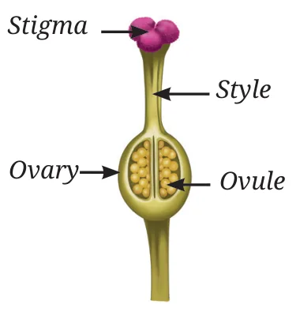
Activity 11.6: is pollen needed for fruits?
On a pea plant, five treatments are set up. Stamens are removed from one bud and one open flower; muslin bags keep insects and outside pollen away.
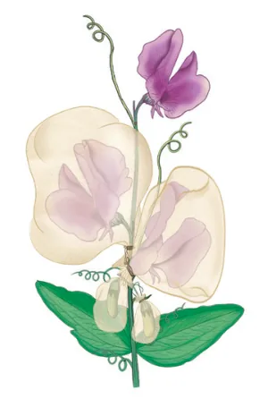
| Treatment | Fruit forms? | Why |
|---|---|---|
| Bud, wrapped | Yes | Pea pollinates itself inside the bud (self-pollination) |
| Bud, stamens removed, wrapped | No | No pollen of its own, and the bag blocks outside pollen |
| Open flower, stamens removed, wrapped | Yes | It was already pollinated before the stamens were removed |
| Open flower, wrapped | Yes | Own pollen is present |
| Open flower, not wrapped | Yes | Own pollen and pollinators |
Conclusion
The transfer of pollen grains from the anther to the stigma is necessary for fruit formation. This transfer is called pollination.
Pollination
Self-pollination
Pollen reaches the stigma of the same flower, or of another flower on the same plant. Example: pea, tomato, wheat.
Cross-pollination
Pollen goes from the anther of a flower on one plant to the stigma of a flower on another plant of the same kind. Example: papaya, sunflower, apple, maize.
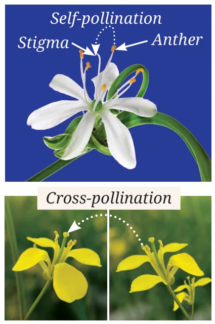
| Point | Self-pollination | Cross-pollination |
|---|---|---|
| Pollen from | Same flower or same plant | Another plant of the same species |
| Needs a pollinator? | Usually not | Yes (wind, water, insects, birds) |
| Variation | Very little | More: new mixes of characters |
| Pollen wasted | Less | More |
11.2.4 Pollination strategies
Pollination needs outside agents called pollinators. Each type of flower is shaped for its pollinator:
🌬️ Wind wheat, maize, rice
Pollen is light, small and made in huge numbers. Stigma is long and feathery to trap it. Flowers are dull, no nectar or scent.
💧 Water Vallisneria, Hydrilla
Water currents carry pollen from flower to flower in aquatic plants.
🐝 Insects sunflower, hibiscus, marigold
Flowers are bright, scented and give nectar. Pollen is large, sticky or spiny to cling to the insect. Stigma is sticky.
🐦 Birds coral tree, hibiscus
Visited by birds such as the Indian white-eye and sunbirds, which carry pollen while drinking nectar.
Activity 11.7: which strategy is more efficient?
| Strategy | Pollen per flower | Seeds formed |
|---|---|---|
| Wind-pollinated grasses (maize, wheat) | 5,00,000 – 10,00,000 | 50 – 200 |
| Insect-pollinated (sunflower) | 20,000 – 40,000 | 800 – 1,000 |
🧮 Pollen-to-seed calculator
Change the numbers and see how many pollen grains are "spent" for each seed.
What the numbers tell us
Wind pollination needs about 2,500 to 20,000 pollen grains for one seed; insect pollination needs only about 20 to 50. Insects carry pollen straight to the right flower, so they are far more efficient. Wind is random, so grasses make a huge amount of cheap, tiny pollen. Because grasses grow close together in large fields, enough pollen still lands on stigmas: a big number makes up for the low success rate.
Fertilisation and seed formation
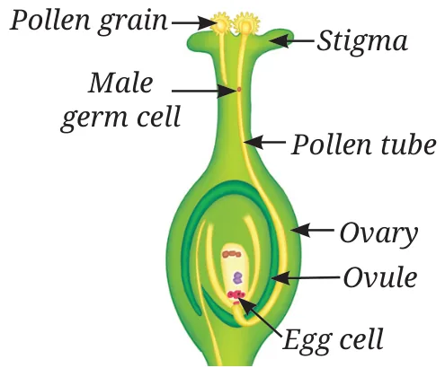
- Pollen lands on a compatible stigma
- Pollen grain grows a pollen tube down the style into the ovary
- Male gamete travels down the tube to the ovule
- Male gamete fuses with the egg cell: fertilisation
- Fertilised egg = zygote → grows into an embryo
After fertilisation
| Flower part | Becomes |
|---|---|
| Ovary | Fruit |
| Ovule | Seed |
| Zygote | Embryo (inside the seed) |
| Petals, sepals, stamens | Usually wither and fall |
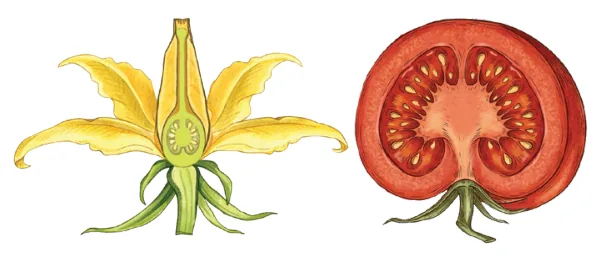
Seeds are then dispersed by wind, water and animals. When water, air and a suitable temperature are available, a seed germinates into a new plant. Sexual reproduction thus makes new plants and creates variation, helping species survive and adapt.
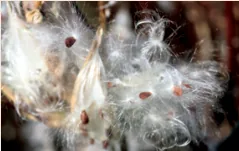
Remember the order
Pollination → Germination of pollen → Fertilisation → Zygote → Embryo → Seed. Say it as: "Please Give Fresh Zingy Extra Seeds".
Meet a scientist: P. Maheshwari
Known as the "Father of Indian Embryology" (embryology here is the study of plant reproductive organs). He developed in-vitro fertilisation in flowering plants, fusing an egg and a male gamete in a test tube to create new hybrid plants, and was one of the first to grow plant embryos on artificial nutrient media. His book An Introduction to the Embryology of Angiosperms (1950) is still used worldwide.
Bridging Science and Society: plant breeding
- Selective breeding: farmers choose plants with desirable characters to reproduce.
- Artificial hybridisation: remove stamens (emasculation), cover the flower with a bag (bagging) to stop self-pollination, then dust pollen with the desired characters by hand.
- Genetic engineering: insert genetic material for a desired character into the DNA of a variety.
These give high-yielding and disease-resistant varieties and have revolutionised agriculture.
Sexual reproduction in animals
Animals reproduce asexually (budding in hydra) and/or sexually. In sexual reproduction, the big challenge is making sure the sperm meets the egg, and that the young survive long enough to grow up.
| Point | External fertilisation | Internal fertilisation |
|---|---|---|
| Where | Outside the body, in water | Inside the female's body |
| How | Female releases eggs into water; male releases sperm over them | Sperm is placed inside the female |
| Examples | Frogs, most fish | Reptiles, birds, mammals |
| Eggs made | Very many (hundreds to thousands) | Few |
| Protection | Little: many eggs are washed away or eaten | Egg/embryo is protected, so survival is higher |
11.4 Variation in reproductive strategies
| Animal | Habitat | Fertilisation | Eggs at a time | Survival of young |
|---|---|---|---|---|
| Fish | Water | External | 100s – 1000s | Low |
| Frog | Water/land | External | 5,000 – 50,000 | Low |
| Lizard | Land | Internal | 2 – 20 | Moderate |
| Bird | Water/land | Internal | 1 – 15 | Moderate to high |
The pattern
Less protection → more eggs. More protection → fewer eggs, but more of them survive.
The yolk problem and the larva
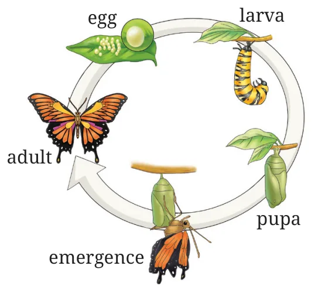
Fish, amphibians and insects lay thousands of eggs, so the mother cannot fill each one with lots of yolk (stored food). Each egg has just enough yolk to make a larva.
The larva is a feeding stage: it eats (rotten food, manure, leaves) and grows. When it has stored enough food, it transforms into the adult (butterfly, frog).
Reptiles and birds put enough yolk in each egg for the embryo to develop fully before hatching. In mammals, the embryo grows inside the mother.
🦋 Step through the butterfly life cycle
Some young are ready to find food at birth; others need a long period of feeding and care. This depends on how long the embryo develops inside the egg or mother. Mammals feed their young on breast milk.
Reproduction in human beings
11.5.1 Reproductive maturity. As a child grows into an adult (puberty), the reproductive organs mature and start producing gametes: sperm in males and eggs in females. When a sperm meets an egg inside the female body, a zygote forms, which develops into an embryo and then a foetus in the uterus.
11.5.2 Male reproductive system
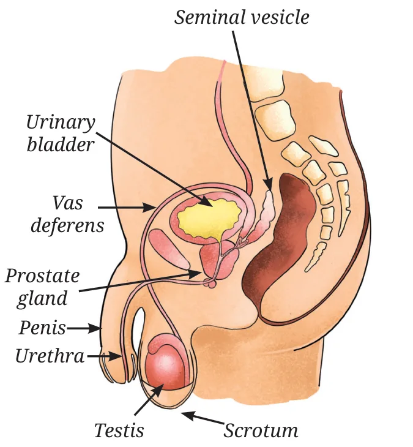
- 1Testes (singular testis): two oval organs that make sperm and the male hormone that controls sperm production and the changes of puberty in boys.
- 2Scrotum: skin pouch that keeps the testes slightly cooler than body temperature, which sperm formation needs.
- 3Vas deferens: long tube carrying sperm from the testis to the urethra.
- 4Urethra: common passage for urine and sperm.
- 5Seminal vesicles and prostate gland: add fluids that nourish sperm and help them stay active and move.
Path of sperm
Testis → Vas deferens → Urethra → out through the penis. Think "The Very Useful route". A sperm has a head (genetic material) and a long tail for swimming to the egg.
11.5.3 Female reproductive system
- 1Ovaries (a pair): make the eggs and female hormones, which bring about the changes of puberty.
- 2Oviducts / fallopian tubes: connect each ovary to the uterus. Fertilisation happens here.
- 3Uterus: bag-like organ where the foetus develops.
- 4Cervix: narrow passage where the uterus opens into the vagina.
- 5Vagina: passage from the cervix to the outside (birth canal).
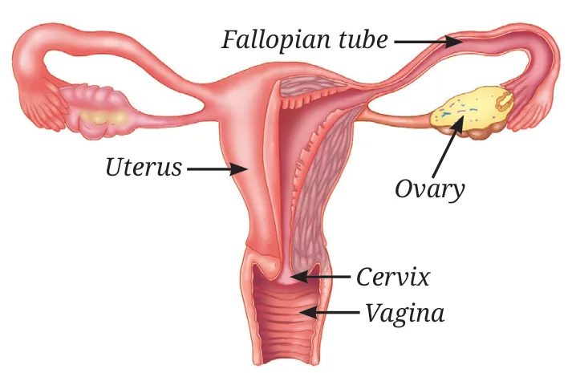
| Job | Male | Female |
|---|---|---|
| Makes gametes and hormones | Testes | Ovaries |
| Carries gametes | Vas deferens, urethra | Oviducts (fallopian tubes) |
| Extra parts | Seminal vesicles, prostate (fluids) | Uterus (baby grows), cervix, vagina |
Gametes and fertilisation
Making gametes is called gametogenesis. It happens in the testes and ovaries by meiosis: body cells have 46 chromosomes, sperm and eggs have 23. When they join, the zygote again has 46, the same as the parents.
| Feature | Sperm | Egg |
|---|---|---|
| Size | Very small | Large |
| Number produced | Millions | Few (usually one a month) |
| Stored nutrients | Absent | Present |
| Motility | Actively motile (swims) | Non-motile |
This difference between male and female gametes is seen in most animals.
11.5.5 What happens when a sperm meets an egg?
- At birth, a girl's ovaries already hold millions of immature eggs.
- From puberty, usually one mature egg is released each month from one ovary: ovulation.
- Before ovulation, the inner lining of the uterus becomes thick.
- The egg moves from the ovary into the oviduct. Sperm that enter the vagina swim up and may meet it there.
- If a sperm fuses with the egg, a zygote forms (fertilisation).
- The zygote divides by mitosis while travelling to the uterus, then implants in the thick, blood-rich lining. Implantation marks the beginning of pregnancy.
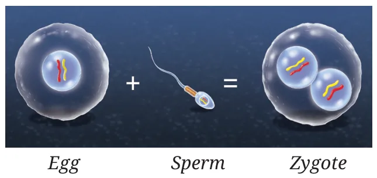
Meet a scientist: Dr Subhash Mukhopadhyay and IVF
In-vitro fertilisation (IVF): an egg and a sperm are joined outside the body in a laboratory dish, and the fertilised egg is placed in the uterus to begin a pregnancy. Such a baby is called a "test tube baby", though it is really done in a culture dish. In 1978, Subhash Mukhopadhyay of Kolkata made India's first test tube baby, Kanupriya Agarwal (Durga), possible.
👶 Threads of Curiosity: who decides if the baby is a boy or a girl?
Females are XX, males are XY. Every egg carries an X. Tap a sperm to fertilise the egg.
| Sperm X | Sperm Y | |
|---|---|---|
| Egg X | XX: girl | XY: boy |
So the father's sperm decides the sex of the baby. The chance is about 50 : 50 each time.
The menstrual cycle
If the egg is not fertilised, it stays alive for about a day and then breaks down. The thick, blood-rich lining of the uterus is no longer needed, so it sheds and leaves the body through the vagina with some blood. This is menstruation (a period) and lasts about 3 to 7 days.
The cycle of ovulation, preparing the uterus and menstruation repeats every 21–35 days (often about 28). It starts at puberty (age 10–14) and continues until menopause (around age 50).
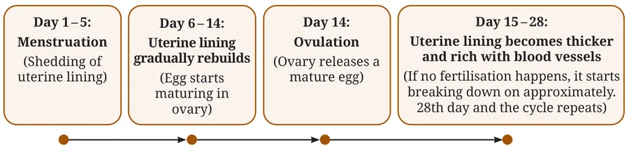
🗓️ Walk through a 28-day cycle
Move the slider day by day and watch the uterine lining and the ovary.
Next period calculator (try Pause and Ponder 7)
Is ovulation always on day 14?
No. Day 14 is only for a typical 28-day cycle. Ovulation usually happens about 14 days before the next period, so in a 21-day cycle it is around day 7 and in a 35-day cycle around day 21. It can also shift with stress, illness or diet.
Menstrual hygiene (Bridging Science and Society)
- Use menstrual products: sanitary pads (preferably biodegradable), tampons, menstrual cups.
- Wash the genital area with water regularly; avoid soap there, as it disturbs the natural bacterial balance.
- Always wash hands with soap before and after changing a pad.
- Wrap used pads in newspaper or their wrapper and put them in a bin. Never flush them.
- Wash reusable pads as instructed and dry them completely.
- Change pads every 4–6 hours, or more often if the flow is heavy.
Period is your pride
Menstruation is a sign of a healthy reproductive system, not something to be ashamed of. Clean products, regular changing and responsible disposal keep you healthy and your surroundings clean.
Pregnancy and childbirth
Pregnancy lasts about nine months and is divided into three trimesters (three months each).
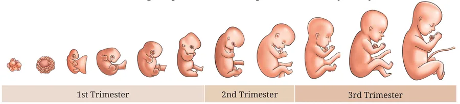
1st trimester
Zygote → embryo in the first two months; major organs start forming. From about the 9th week it is called a foetus.
2nd trimester
Foetus grows bigger and stronger. The mother can usually feel its movements.
3rd trimester
Baby grows rapidly and gets ready for life outside the womb.
The uterus protects and nourishes the baby throughout. At childbirth, strong contractions of the uterus muscles push the baby out through the birth canal. If a normal birth is not safe, doctors may use medical or surgical procedures.
Care after birth
- Breastfeeding: mother's milk gives complete nutrition and protects the baby from many diseases.
- Keep the newborn warm, get vaccinations on time, handle gently.
- The mother needs nutritious food, rest, and should avoid smoking, alcohol and medicines without a doctor's advice.
11.5.8 Mother's health during pregnancy
A balanced diet rich in proteins, vitamins and minerals, regular check-ups, light exercise and rest as advised, and emotional support from family keep the mother and baby healthy.
Post-partum depression
Some mothers feel anxiety and tiredness after delivery. It is a recognised, treatable condition; they should talk to a doctor, nurse or ASHA worker.
ASHA workers
More than 10 lakh Accredited Social Health Activists under the National Health Mission promote hygiene, immunisation, safe delivery and family planning, especially in villages.
Growing up responsibly
Sexual maturity (sperm production in boys, menstrual cycles in girls) comes gradually in adolescence, but emotional maturity takes longer. Being emotionally mature means handling feelings, communicating clearly and making thoughtful decisions. A body that can reproduce does not mean a person is ready for adult responsibilities.
11.5.10 Preventing infections and unwanted pregnancy
Sexually Transmitted Infections (STIs) pass from an infected person through close sexual contact: gonorrhoea, syphilis, herpes, genital warts, HIV (which can lead to AIDS). Some are not yet curable. Condoms help prevent their spread and also prevent pregnancy.
| Method | How it works | Note |
|---|---|---|
| Barrier: condom, vaginal cover | Stops sperm reaching the egg | Condoms also protect against STIs |
| Oral pills | Change hormones so eggs are not released | May have side effects |
| IUD (Copper-T) | Placed in the uterus to prevent pregnancy | May irritate the uterus |
| Surgical | Blocks the vas deferens (males) or fallopian tubes (females) | Sperm and egg cannot meet |
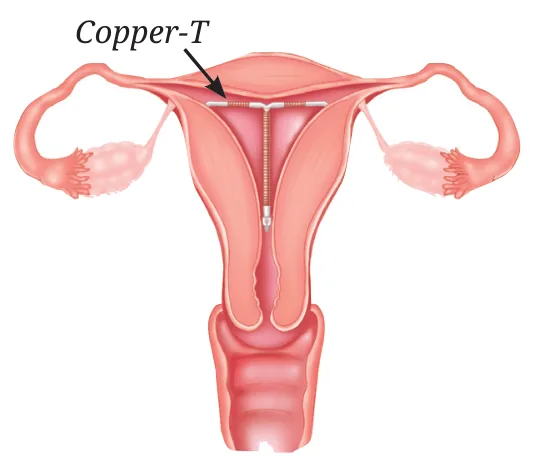
The law on sex determination
Removing an unwanted pregnancy by surgery is called abortion and is generally done only in the first trimester. Choosing abortion because of the baby's sex is a serious concern: it upsets the sex ratio of society. That is why prenatal sex determination is strictly prohibited by law in India.
Made in India: the weekly pill
Scientists at the Central Drug Research Institute (CDRI), Lucknow developed the world's first non-steroidal, non-hormonal oral contraceptive pill (centchroman, sold as "Saheli"). Taken once a week, it avoids side effects like weight gain, nausea or headaches and is given free under the National Family Planning Programme.
Memory tricks
Flower parts, outside in S P S P
"Some People Stay Pretty": Sepal, Petal, Stamen, Pistil.
Which is male? staMEN
Stamen has "men" in it, so it is the male part. The pistil is female.
Pistil, top to bottom S S O
Stigma, Style, Ovary: "Sticky Straw to the Oven".
What becomes what big → big
The bigger word ovary becomes the bigger thing, the fruit. The smaller ovule becomes the smaller seed.
Mitosis vs meiosis copy vs halve
Mitosis = Mirror copy (same 46). Meiosis = Meet a partner later, so it makes half (23) for gametes.
Menstrual cycle 5 – 14 – 14 – 28
"Shed, build, release, ready": days 1–5 shed, 6–14 build, day 14 release the egg, 15–28 ready (then shed again).
Sex of the baby Dad decides
Mother always gives X. Dad's sperm brings X (girl) or Y (boy).
Eggs and protection see-saw
More eggs ⇄ less care. Fish and frogs lay thousands; birds lay a few and protect them.
Asexual or sexual?
Read the example and decide.
At a glance
- Reproduction produces new individuals of the same species and passes on genetic information.
- Asexual: one parent, by mitosis, offspring are clones. Budding (yeast, hydra), spore formation (bread mould), vegetative propagation (potato, Bryophyllum).
- Artificial vegetative methods: cutting, grafting, layering, tissue culture.
- Sexual: two parents; meiosis halves the chromosomes (46 → 23) to make gametes; random mixing gives variation.
- Flower: sepal, petal, stamen (anther + filament, male), pistil (stigma + style + ovary, female).
- Pollination: pollen from anther to stigma; self or cross; by wind, water, insects or birds.
- Pollen tube carries the male gamete to the ovule → fertilisation → zygote → embryo. Ovule → seed, ovary → fruit.
- Animals: external fertilisation (fish, frog: many eggs, low survival) or internal (reptiles, birds, mammals: fewer eggs, better survival).
- Male: testes, scrotum, vas deferens, urethra, seminal vesicles, prostate. Female: ovaries, oviducts, uterus, cervix, vagina.
- Ovulation around day 14 of a 28-day cycle; no fertilisation → menstruation; fertilisation → implantation → pregnancy (about 9 months, 3 trimesters).
- Birth control: condoms, pills, IUDs (Copper-T), surgery. Condoms also protect from STIs. Prenatal sex determination is illegal in India.
Test yourself
Tap an answer. Score: 0 / 12
1. Tiny plantlets grow on the leaf edges of
Bryophyllum leaves sprout plantlets from their notches.
2. In grafting, the rooted plant that receives the stem piece is called the
Stock = the soil side with roots; scion = the stem piece on top.
3. Bread mould reproduces mainly by
Spores form in a sac (sporangium) and spread through air.
4. Offspring produced by mitosis are
Mitosis makes identical cells with the same chromosome number.
5. How many chromosomes does a human egg cell have?
Gametes are haploid: half of 46.
6. With 4 pairs of characters, how many types of gametes are possible?
2 × 2 × 2 × 2 = 2⁴ = 16.
7. The part of the flower that becomes the fruit is the
Ovary → fruit; ovule → seed.
8. A long, feathery stigma and light pollen suggest pollination by
Wheat, maize and rice are wind-pollinated.
9. Which animal has internal fertilisation?
Reptiles, birds and mammals: internal.
10. Sperm travel from the testes through the
Testis → vas deferens → urethra.
11. In a 28-day cycle, ovulation usually happens around day
Day 14 in a typical 28-day cycle.
12. Which method prevents pregnancy and also protects against STIs?
A barrier stops contact, so it blocks infections too.
Answers to all questions
Tap a question to see the answer. Use Print or save as PDF at the top to get all answers open.
Pause and Ponder
1.In a china-rose (hibiscus) plant, a pollen tube grows through the style after pollen lands on the stigma. Which process is about to happen next?
2.Look at the calotropis (madar) and dandelion seeds (Fig. 11.16). What kind of seed dispersal are they adapted for?
3.A farmer plants two maize varieties side by side; seeds form only when pollen from one variety reaches the stigma of the other. What type of pollination is this?
4.Why do animals with external fertilisation generally produce more eggs than animals with internal fertilisation?
5.In animals, in which fertilisation method are the gametes more protected?
6.Ravi notices he is growing taller rapidly, his shoulders are broadening and his voice cracks. What stage of life is he entering?
7.Rina's period occurs every 28 days. Her last period was on 5th March. When is she most likely to get her next period?
8.A human zygote has just formed. How many chromosomes does it have?
9.What protective devices can be used during sexual activity to reduce the spread of STIs?
10.If a couple uses oral contraceptive pills but not condoms, which risks remain and why?
11.Young ones of many animals can walk or find food soon after birth, but human babies are dependent for a long time. Advantages and disadvantages for humans as a species?
Disadvantages: babies are helpless and vulnerable for years; parents must spend a lot of time, energy and resources; humans have few children, so the population grows slowly.
Activity 11.7
1.Compare the two strategies in terms of pollen-to-seed ratio and efficiency of pollination and seed formation.
Insect: 20,000 ÷ 1,000 = 20 up to 40,000 ÷ 800 = 50 pollen grains per seed.
Insect pollination is roughly 100 to 1,000 times more efficient: it makes much less pollen but forms many more seeds. Most wind-blown pollen is wasted.
2.Why can producing a very large number of pollen grains still be an effective strategy?
Revise, Reflect, Refine
1.Anthers are removed before the flower matures; later pollen from another plant of the same species is dusted on its stigma and seeds form. Which process has been ensured? (i) Self-pollination (ii) Cross-pollination (iii) Fertilisation (iv) Tissue culture
2.Arrange in order: (i) Pollen germination on stigma (ii) Fertilisation (iii) Pollination (iv) Formation of zygote
3.Assertion (A): The zygote formed after fertilisation immediately attaches to the uterus wall. Reason (R): The uterus wall is always prepared to receive the zygote.
R is not fully correct either: the lining is not always ready; it thickens and becomes blood-rich in each cycle (after ovulation) and is shed during menstruation.
Among the options, the expected answer is (iv) A is false, but R is true, reading R as "the uterus wall prepares itself to receive the zygote". In your answer, mention that the preparation happens every cycle, not all the time.
4.Why does asexual reproduction produce offspring that are genetically identical to the parent?
5.Explain why the menstrual cycle stops during pregnancy.
6.Why are flowers that bloom at night white or light coloured, compared to day-blooming flowers?
7.Why are vegetatively propagated plants more vulnerable to diseases than sexually reproduced plants?
8.If all flowers of a plant type could only self-pollinate, how would genetic diversity change over generations?
9.A farmer wants many genetically identical plants quickly. Suggest suitable methods and why they work.
10.Suresh tests pollen germination in sugar solutions of 0%, 2.5%, 5%, 7.5% and 10%. (i) What hypotheses can be tested? (ii) What should be kept the same?
- Pollen grains need sugar to germinate (compare 0% with the others).
- Germination increases with sugar concentration up to a certain level.
- Too much sugar reduces germination (high concentration draws water out of the pollen).
- There is an optimum sugar concentration at which most pollen germinates and pollen tubes grow longest.
11.Which type(s) of pollination might have been followed in tomato (stamens cover the stigma), wheat (flowers open after pollination) and papaya (male and female flowers on different trees)?
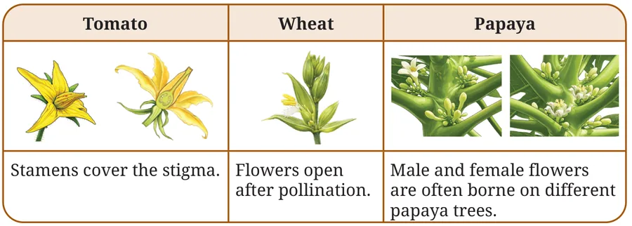
- Tomato: self-pollination. The stamens form a cone around the stigma, so its own pollen falls on it.
- Wheat: self-pollination. Pollination happens before the flower opens, so outside pollen cannot enter.
- Papaya: cross-pollination. Male and female flowers are on different trees, so pollen must travel from a male tree to a female tree (by wind and insects).
12.Apple orchards: Place A with natural pollinators, Place B with bee colonies (Fig. 11.24). (i) Hypotheses? (ii) Parameters? (iii) Compare A and B. (iv) Inference?
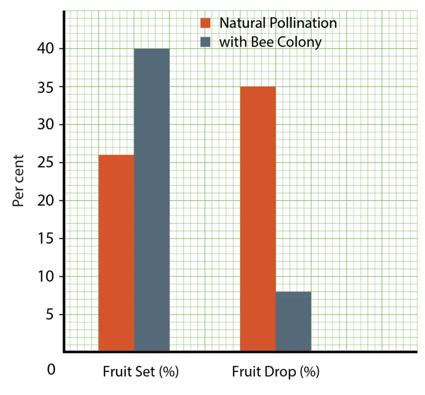
(ii) Parameters: variable changed: type of pollination (natural vs bee colony). Measured: fruit set (%) and fruit drop (%). Kept similar: apple variety, age of trees, number of branches, climate, soil, irrigation, fertiliser and pest control, season.
(iii) Comparison:
| Place A (natural) | Place B (bees) | |
|---|---|---|
| Fruit set | 26% | 40% |
| Fruit drop | 35% | 8% |
(iv) Inference: bees improve pollination; well-pollinated flowers form more fruits that stay on the tree. Beekeeping with apple farming (mixed farming) increases apple yield and also gives honey, so it is a good way to fight the loss of natural pollinators.
13.A student claims, "In humans, ovulation always happens on day 14 of the menstrual cycle." Is this correct? Give at least two reasons.
- Cycle length differs from person to person (21–35 days). Day 14 fits only a 28-day cycle.
- Ovulation happens about 14 days before the next period, so in a 21-day cycle it is near day 7 and in a 35-day cycle near day 21.
- Even in the same person, it can shift from month to month because of stress, illness, diet, travel or hormonal changes, and is often irregular just after puberty.
Threads of Curiosity and The Quest Continues
•Who determines the sex of a baby?
•Does a unicellular organism like amoeba or yeast ever "grow old"?
The Journey Beyond: cutting a tomato
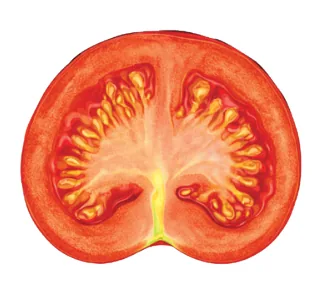
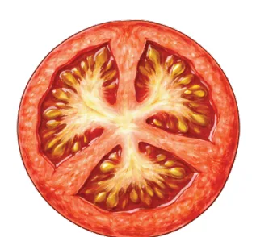
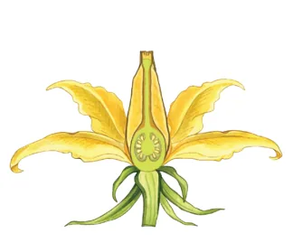
The chambers and seed attachment you see in the tomato fruit match the inside of the ovary of the tomato flower, because the fruit is the ripened ovary and the seeds are the ripened ovules.